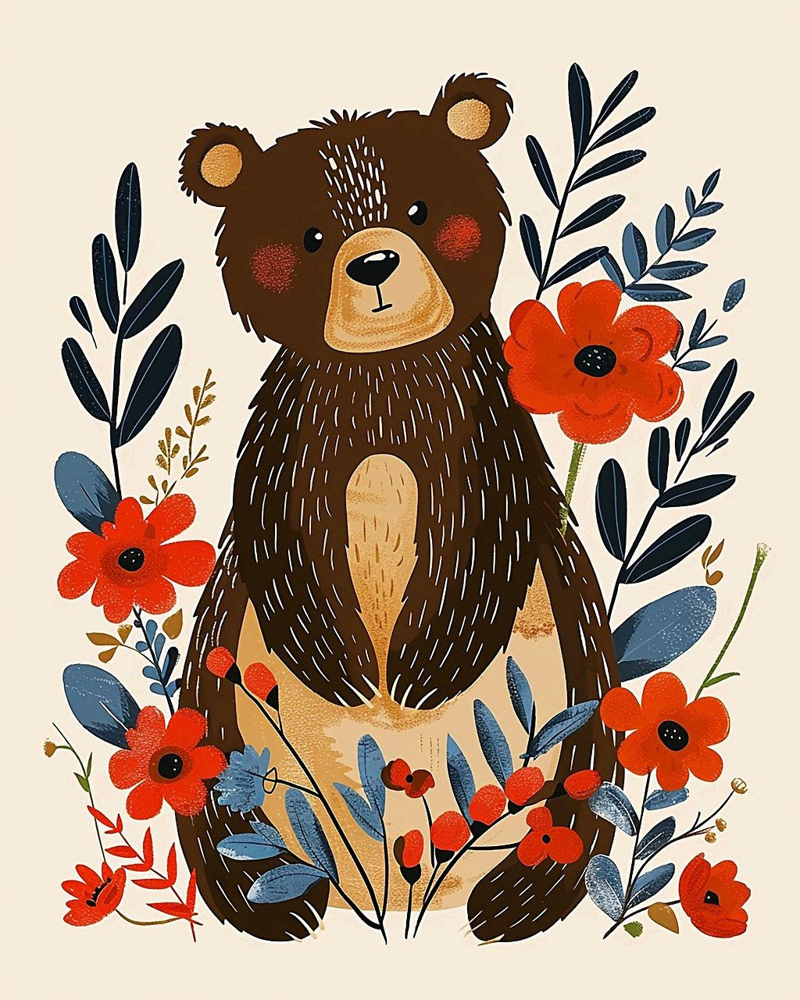
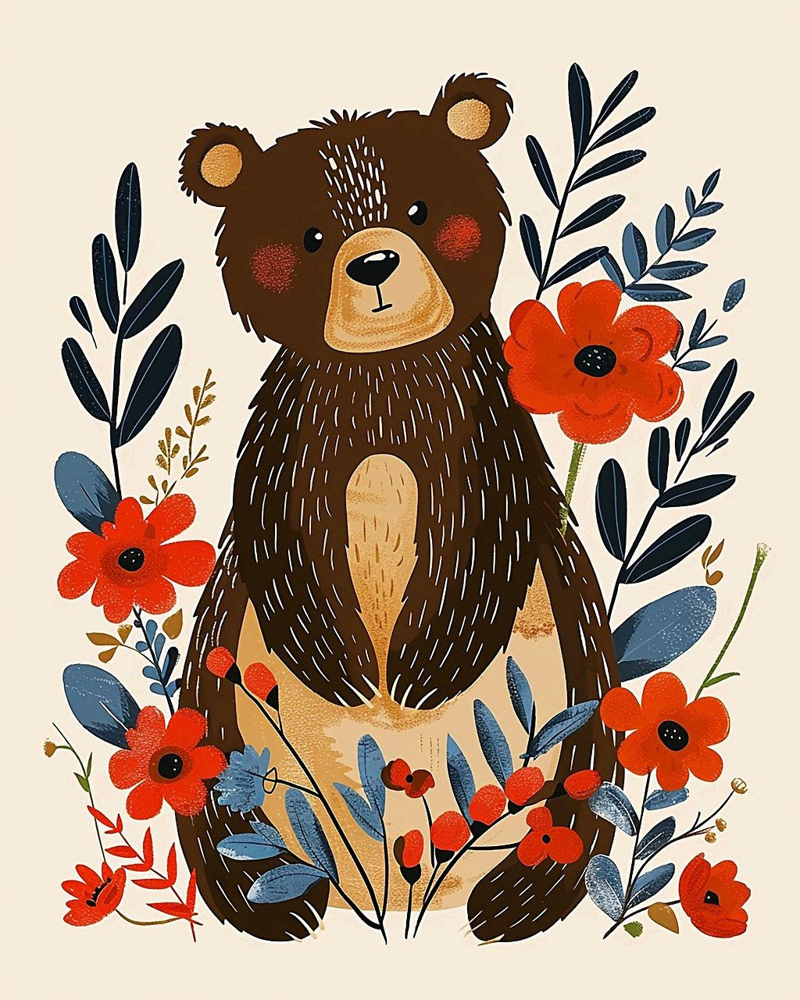

Art That Tells a Story
Folk and cultural arts represent the traditions, beliefs, and history of different communities. These art forms include handmade crafts, music, dance, storytelling, and festivals. They are often passed down through generations to preserve culture. Examples include Native American beadwork, African drumming, and Japanese calligraphy. Folk art celebrates creativity and identity, reminding us where we come from. Today, many artists combine traditional methods with modern styles to keep their cultures alive and meaningful.
 
